소방설비산업기사(전기) (2011-06-12 기출문제)
1과목: 소방원론
1. 제4류 위험물 중 제1석유류, 제2석유류, 제3석유류, 제4석유류를 구분하는 기준은?
- 착화점
- 증기비중
- 비등점
- 인화점
(정답률: 95%)

2. Halon 1211 소화약제의 분자식은?
- CBr2F2
- CH2ClBr
- C2FBr
- CF2ClBr
(정답률: 82%)
3. 산소와 질소의 혼합물인 공기의 평균 분자량은? (단, 공기는 산소 21vol%, 질소 79vol%로 구성되어 있다고 가정한다.)
- 30.84
- 29.84
- 28.84
- 27.84
(정답률: 83%)
4. 목재의 연소형태로 옳은 것은?
- 증발연소
- 분해연소
- 표면연소
- 자기연소
(정답률: 65%)
5. 다음 중 독성이 가장 강한 가스는?
- C3H8
- O2
- CO2
- COCl2
(정답률: 83%)
6. 플래시오버(flash over)란 무엇인가?
- 건물 화재에서 가연물이 착화하여 연소하기 시작하는 단계
- 건물 화재에서 발생한 가연성 가스가 축적되다가 일순간에 화염이 크게 되는 현상
- 건물 화재에서 소방활동 진압이 끝난 단계
- 건물 화재에서 다 타고 더 이상 탈 것이 없어 자연 진화된 상태
(정답률: 96%)
7. 소화(消火)를 하기 위한 방법으로 틀린 것은?
- 산소의 농도를 낮추어 준다.
- 가연성 물질을 냉각시킨다.
- 가열원을 계속 공급한다.
- 연쇄반응을 억제한다.
(정답률: 89%)
8. 제2종 분말소화약제의 주성분은?
- 제1인산암모늄
- 황산나트륨
- 탄산수소나트륨
- 탄산수소칼륨
(정답률: 82%)
9. 메탄 1mol이 완전 연소하는데 필요한 산소는 몇 mol인가?
- 1
- 2
- 3
- 4
(정답률: 75%)
10. 화재를 소화시키는 소화작용이 아닌 것은?
- 냉각작용
- 질식작용
- 부촉매작용
- 활성화작용
(정답률: 92%)
11. 고체연료의 연소형태를 구분할 때 해당하지 않는 것은?
- 증발연소
- 분해연소
- 표면연소
- 예혼합연소
(정답률: 87%)
12. 햇빛에 방치한 기름걸레가 자연발화를 일으켰다. 다음 중 이때의 원인에 가장 가까운 것은 어느 것인가?
- 광합성작용
- 산화열 축적
- 흡열반응
- 단열압축
(정답률: 90%)
13. 등유 또는 경유 화재에 해당하는 것은?
- A급화재
- B급화재
- C급화재
- D급화재
(정답률: 95%)
14. 내화구조기준에서 외벽 중 비내력벽의 경우에는 철근콘크리트조의 두께가 몇 ㎝ 이상인 것인가?
- 5
- 6
- 7
- 8
(정답률: 47%)
15. 피난대책의 조건으로 틀린 것은?
- 피난로는 간단명료할 것
- 피난설비는 반드시 이동식 설비일 것
- 막다른 복도가 없도록 계획할 것
- 피난설비는 Fool-Proof와 Fail-Safe의 원칙을 중시할 것
(정답률: 91%)
16. 소화약제로 사용되는 물에 대한 설명 중 틀린 것은?
- 극성 분자이다.
- 수소결합을 하고 있다.
- 아세톤, 벤젠보다 증발잠열이 크다.
- 아세톤, 구리보다 비열이 매우 작다.
(정답률: 70%)
17. 위험물질의 자연발화를 방지하는 방법이 아닌 것은?
- 열의 축적을 방지할 것
- 저장실의 온도를 저온으로 유지할 것
- 촉매역할을 하는 물질과 접촉을 피할 것
- 습도를 높일 것
(정답률: 86%)
18. 액체 이산화탄소 1kg이 1atm, 20℃의 대기 중에 방출되어 모두 기체로 변화하면 약 몇 l 가 되는가?
- 437
- 546
- 658
- 772
(정답률: 56%)
19. 중질유가 탱크에서 조용히 연소하다 열유층에 의해 가열된 하부의 물이 폭발적으로 끓어 올라와 상부의 뜨거운 기름과 함께 분출 하는 현상을 무엇이라 하는가?
- 플래시오버
- 보일오버
- 백드래프트
- 롤오버
(정답률: 94%)
20. 불연성 가스에 해당하는 것은?
- 프레온가스
- 암모니아가스
- 일산화탄소가스
- 메탄가스
(정답률: 55%)
2과목: 소방전기회로
21. PI 제어동작은 정상특성, 즉 제어의 정도를 개선하는 지상요소인데 이것을 보상하는 지상보상의 특성으로 옳은 것은?
- 주어진 안정도에 대하여 속도편차상수가 감소한다.
- 시간응답이 비교적 빠르다.
- 이득여유가 감소하고 공진값이 증가한다.
- 이득교점 주파수가 낮아지며, 대역폭이 감소한다.
(정답률: 70%)
22. 다음 중 전류에 대한 설명으로 잘못된 것은?
- 전류의 크기는 회로의 단면을 단위시간에 통과하는 전하량으로 정의한다.
- 전류의 단위는 암페어이다.
- 1A는 1분 동안에 1C의 전하가 통과할 때의 전류의 세기를 말한다.
- 전하의 이동을 전류라 한다.
(정답률: 70%)
23. 부저항 특성을 갖는 서미스터의 저항값은 온도가 증가함에 따라 어떻게 변하는가?
- 감소
- 증가하다가 감소
- 증가
- 감소하다가 증가
(정답률: 84%)
24. 정현파 교류의 실횻값[V]과 최댓값[Vm]의 관계를 다음 중 올바르게 나타낸 것은?
- V=πVm
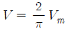
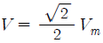
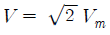
(정답률: 52%)
25. 다음 중 논리식이 잘못된 것은?
- X+1=1
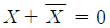
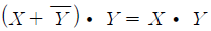
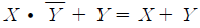
(정답률: 73%)
26. 다음 중 V결선시 변압기의 이용률은 몇 %인가?
- 57.7
- 70.7
- 86.6
- 100
(정답률: 59%)
27. 다음 중에서 디지털 제어의 이점이 아닌 것은?
- 감도의 개선
- 신뢰도의 향상
- 잡음 및 외란의 영향의 감소
- 프로그램의 단일성
(정답률: 85%)
28. 2전력계법을 사용하여 3상 전력을 측정하였더니 각 전력계가 400W, 300W를 지시한다면 전전력은 몇 W인가?
- 300
- 350
- 400
- 700
(정답률: 72%)
29. 목푯값이 시간에 관계없이 항상 일정한 값을 가지는 제어는?
- 정치제어
- 추종제어
- 비율제어
- 프로그램제어
(정답률: 84%)
30. 절연저항시험에서 대지전압이 150V 이하인 경우 0.1㏁ 이상이란 뜻은?
- 누설전류가 1.5㎃ 이하가 되어야 한다.
- 누설전류가 0.15㎃ 이하가 되어야 한다.
- 누설전류가 15㎃ 이상 되어야 한다.
- 누설전류가 0.15㎃ 이상 되어야 한다.
(정답률: 55%)
31. 저항 1Ω, 자기인덕턴스 20H의 코일에 10V의 직류전압을 인가하는 순간 전류증가율은 몇 A/sec인가?
- 0.5
- 1.0
- 10
- 100
(정답률: 38%)
32. 다이오드를 사용한 정류회로에서 여러 개의 다이오드를 직렬로 연결하여 사용하면?
- 다이오드를 과전압으로부터 보호할 수 있다.
- 다이오드를 과전류로부터 보호할 수 있다.
- 다이오드를 높은 주파수에서 사용할 수 있다.
- 부하 출력의 맥동률을 감소시킬 수 있다.
(정답률: 72%)
33. 다음의 변압기 결선에서 제3고조파의 영향을 가장 많이 받는 것은?
- Y-△결선
- △-Y결선
- Y-Y결선
- △-△결선
(정답률: 83%)
34. 200V, 60W, 역률 80%의 부하를 매일 5시간씩 30일 동안 사용하는 경우 전력량은 몇 kWh인가?
- 4.5
- 7.2
- 9
- 18
(정답률: 48%)
35. υ=70sinωt[V]로 나타낸 교류전압을 유도리액턴스 5Ω에 가할 때 흐르는 전류를 나타내는 식은?
- 14sin2ωt
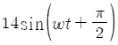
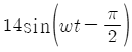
- 14sin(ωt+π)
(정답률: 57%)
36. 1Wㆍsec와 동일한 것은?
- 1C
- 1kgㆍm
- 1J
- 1kcal
(정답률: 77%)
37. 정전용량이 같은 콘덴서 2개를 병렬로 접속 했을 때의 합성정전용량은 직렬로 접속했을 때의 합성정전용량보다 어떻게 되는가?
- 1/2로 된다.
- 1/4로 된다.
- 2배로 된다.
- 4배로 된다.
(정답률: 76%)
38. 그림과 같은 유접점회로의 논리식은?
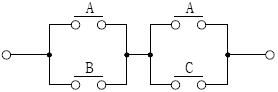
- AB+BC
- A+BC
- AB+C
- B+AC
(정답률: 87%)
39. 반지름이 1m인 도체구에 전하 Q[C]을 줄 때, 도체구 1개의 정전용량은 몇 ㎌인가?
- 1/9×10-3
- 1/9×10-4
- 9×10-3
- 9×10-4
(정답률: 53%)
40. 그림과 같이 직선도체에 전류를 흘릴 경우 발생하는 자력선의 방향을 설명하는 법칙은?
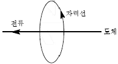
- 플레밍의 왼손 법칙
- 앙페르의 오른나사 법칙
- 패러데이의 법칙
- 렌츠의 법칙
(정답률: 83%)
3과목: 소방관계법규
41. 소방청장, 소방본부장 또는 소방서장이 실시하는 소방특별조사의 서면통지일로 옳은 것은?
- 24시간 전
- 24시간 후
- 7일 전
- 7일 후
(정답률: 76%)
42. 다음 중 소방기본법 시행령에서 규정하는 국고보조대상이 아닌 것은?
- 소화설비
- 소방자동차
- 소방전용전산설비
- 소방전용통신설비
(정답률: 65%)
43. 위험물 안전관리법령에서 정하는 자체소방대에 관한 원칙적인 사항으로 옳지 않은 것은?
- 제4류 위험물을 취급하는 제조소 또는 일반취급소에 대하여 적용한다.
- 저장ㆍ취급하는 양이 지정수량의 3만 배 이상의 위험물에 한한다.
- 대상이 되는 관계인은 대통령령의 규정에 의하여 화학소방자동차 및 자체소방대원을 두어야 한다.
- 자체소방대를 두지 아니한 허가받은 관계인에 대한 벌칙은 1년 이하의 징역 또는 1천만 원 이하의 벌금이다.
(정답률: 64%)
44. 산화성 고체이며 제1류 위험물에 해당하는 것은?
- 황화린
- 칼륨
- 유기과산화물
- 염소산염류
(정답률: 77%)
45. 무창층이란 지상층 중 피난 또는 소화활동상 유효한 개구부의 면적이 그 층의 바닥면적의 얼마 이하가 되는 층을 말하는가?
- 40분의 1 이하
- 30분의 1 이하
- 20분의 1 이하
- 10분의 1 이하
(정답률: 66%)
46. 소방활동에 종사하여 시ㆍ도지사로부터 소방활동의 비용을 지급받을 수 있는 자는?
- 소방대상물에 화재, 재난ㆍ재해 그 밖의 위급한 상황이 발생한 경우 그 관계인
- 소방대상물에 화재, 재난ㆍ재해 그 밖의 위급한 상황이 발생한 경우 구급활동을 한 자
- 화재 또는 구조ㆍ구급현장에서 물건을 가져간 자
- 고의 또는 과실로 인하여 화재 또는 구조ㆍ구급활동이 필요한 상황을 발생시킨 자
(정답률: 75%)
47. 공공기관 방화관리업무의 강습과목으로 해당되지 않는 것은?(정답지를 찾지못해 임의로 1번으로 설정하였습니다. 정답을 아시는분 께서는 오류신고를 통하여 정답 입력 부탁 드립니다.)
- 소방관계법령
- 응급처치요령
- 위험물실무
- 소방학개론
(정답률: 80%)
48. 일반적으로 일반 소방시설설계업의 기계분야의 영업범위는 연면적 몇 m2 미만의 특정소방대상물에 대한 소방시설의 설계인가?
- 10,000
- 20,000
- 30,000
- 50,000
(정답률: 55%)
49. 다음은 소방기본법상 소방업무를 수행하여야 할 주체이다. 설명이 옳은 것은?
- 소방청장, 시ㆍ도지사는 화재, 재난ㆍ재해 그 밖에 구조ㆍ구급이 필요한 상황이 발생한 때에 신속한 소방활동을 위한 정보를 수집ㆍ전파하기 위하여 종합상황실을 설치ㆍ운영하여야 한다.
- 소방의 역사와 안전문화를 발전시키고 국민의 안전의식을 높이기 위하여 소방청장은 소방박물관을, 소방본부장 또는 소방서장은 소방체험관을 설립하여 운영할 수 있다.
- 시ㆍ도지사는 그 관할구역 안에서 발생하는 화재, 재난ㆍ재해 그 밖의 위급한 상황에 있어서 필요한 소방업무를 성실히 수행하여야 한다.
- 소방본부장 또는 소방서장은 소방활동에 필요한 소화전ㆍ급수탑ㆍ저수조를 설치하고 유지ㆍ관리하여야 한다.
(정답률: 46%)
50. 다음 중 소방시설관리업을 등록할 수 있는 자는?
- 피성년후견인
- 금고 이상의 형의 집행유예선고를 받고 그 유예기간 중에 있는 사람
- 금고 이상의 형을 선고받고 그 집행이 종료되거나 집행이 면제된 날로부터 2년이 경과되지 아니한 사람
- 소방시설관리업의 등록이 취소된 날로부터 2년이 경과된 자
(정답률: 76%)
51. 소방시설의 종류 중 경보설비가 아닌 것은?
- 비상방송설비
- 누전경보기
- 연결살수설비
- 자동화재속보설비
(정답률: 86%)
52. 다음 중 대통령령으로 정하는 소방용품에 속하지 않는 것은?
- 방염제
- 소화약제에 따른 간이소화용구
- 가스누설경보기
- 휴대용 비상조명등
(정답률: 56%)
53. 의용소방대의 설치 등에 대한 사항으로 옳지 않은 것은?
- 의용소방대원은 비상근으로 한다.
- 소방업무를 보조하기 위하여 특별시ㆍ광역시ㆍ시ㆍ읍ㆍ면에 의용소방대를 둔다.
- 의용소방대의 운영과 처우 등에 대한 경비는 시ㆍ도지사가 부담한다.
- 의용소방대원의 임명은 타 지역에 거주하는 주민 가운데 희망하는 사람으로 한다.
(정답률: 77%)
54. 다음 중 무선통신보조설비를 반드시 설치하여야 하는 특정소방대상물로 볼 수 없는 것은?
- 지하층의 바닥면적의 합계가 2500m2인 경우
- 지하층의 층수가 3개 층으로 지하층의 바닥면적의 합계가 1000m2인 경우
- 지하가(터널 제외)의 연면적이 1500m2인 경우
- 지하가 터널로서 길이가 500m인 경우
(정답률: 30%)
55. 소방신호의 방법에 해당하지 않는 것은?
- 타종
- 사이렌
- 게시판
- 수신호
(정답률: 54%)
56. 관계인이 예방규정을 정하여야 하는 제조소 등의 기준으로 올바른 것은?
- 지정수량의 20배 이상의 위험물을 취급하는 제조소
- 지정수량의 150배 이상의 위험물을 저장하는 옥내저장소
- 지정수량의 200배 이상의 위험물을 저장하는 옥외저장소
- 지정수량의 250배 이상의 위험물을 저장하는 옥외탱크저장소
(정답률: 60%)
57. 특정소방대상물의 방염대상이 아닌 것은?
- 아파트를 제외한 11층 이상인 건물
- 헬스클럽장, 숙박시설, 종합병원
- 다중이용업의 영업장
- 실내수영장
(정답률: 75%)
58. 제조소 중 위험물을 취급하는 건축물의 구조는 특별한 경우를 제외하고 어떻게 하여야 하는가?
- 지하층이 없는 구조이어야 한다.
- 지하층이 있는 구조이어야 한다.
- 지하층이 있는 1층 이내의 건축물이어야 한다.
- 지하층이 있는 2층 이내의 건축물이어야 한다.
(정답률: 69%)
59. 다음 중 소방시설공사업을 하려는 자가 공사업 등록신청시에 제출하여야 하는 서류로 볼 수 없는 것은?
- 소방기술인력 연명부
- 소방산업공제조합에 출자ㆍ예치ㆍ담보한 금액 확인서
- 전문경영진단기관이 신청일 전 최근 90일 이내 작성한 기업진단 보고서
- 법인 등기부등본
(정답률: 53%)
60. 점포에서 위험물을 용기에 담아 판매하기 위하여 지정수량의 40배 이하의 위험물을 취급하는 장소는?
- 일반취급소
- 주유취급소
- 판매취급소
- 이송취급소
(정답률: 81%)
4과목: 소방전기시설의 구조 및 원리
61. 차동식 스포트형 감지기에서 리크구멍이 막혔을 때 어떤 현상이 발생하는가?
- 작동을 안 함
- 조기작동상태로 됨
- 감지기의 작동과는 관련이 없음
- 온도가 올라가면 작동, 내려가면 복구
(정답률: 58%)
62. 비상콘센트설비의 전원회로 설치기준으로 옳지 않은 것은?
- 하나의 전용회로에 설치하는 비상콘센트는 10개 이상으로 할 것
- 전원회로는 각 층에 있어서 2 이상이 되도록 설치할 것
- 콘센트마다 배선용차단기를 설치하여야 하며 충전부는 노출되지 아니하도록 할 것
- 비상콘센트용의 풀박스 등은 두께 1.6mm 이상의 방청도장을 한 철판으로 할 것
(정답률: 55%)
63. 비상방송설비 중 음향장치에 대한 기준으로 옳지 않은 것은?
- 확성기의 음성입력은 3W(실내에 설치하는 것에 있어서는 1W) 이상일 것
- 확성기는 각 층마다 설치하되 그 층의 각 부분으로부터 하나의 확성기까지의 수평거리가 25m 이하가 되도록 할 것
- 음량조정기를 설치하는 경우 음량조정기의 배선은 3선식으로 할 것
- 화재발생 상황 및 피난에 유효한 방송이 자동으로 개시될 때까지의 소요시간은 20초 이하로 할 것
(정답률: 84%)
64. 다음 중 무선통신보조설비의 증폭기 설치기준으로 옳지 않은 것은?
- 전원은 전기가 정상적으로 공급되는 축전지, 전기저장장치 또는 교류전압 옥내간선으로 하여야 한다.
- 전원까지의 배선은 전용으로 하여야 한다.
- 증폭기의 비상전원 용량은 무선통신보조설비를 유효하게 20분 이상 작동시킬 수 있는 것으로 하여야 한다.
- 증폭기의 전면에는 주 회로의 전원이 정상인지의 여부를 표시할 수 있는 표시등 및 전압계를 설치하여야 한다.
(정답률: 78%)
65. 다음 중 감지기 종류별 설치기준에 적합한 것은?
- 스포트형 감지기는 45°이상 경사되지 않도록 부착한다.
- 공기관식 차동식 분포형 감지기의 검출부는 15°이상 경사되지 않도록 부착한다.
- 열전대식 차동식 분포형 감지기의 하나의 검출부에 접속하는 열전대부는 30개 이하로 한다.
- 연기감지기는 벽 또는 보로부터 1m 이상 떨어진 곳에 설치하여야 한다.
(정답률: 64%)
66. 누전경보기의 전원은 분전반으로부터 전용회로로 하고, 각 극에는 개폐기와 몇 A 이하의 과전류차단기를 설치하여야 하는가?
- 10
- 15
- 20
- 30
(정답률: 86%)
67. 다음 중 비상방송설비의 상용전원 설치기준으로 적합한 것은?
- 전원은 전기가 정상적으로 공급되는 축전지, 전기저장장치 또는 교류전압의 옥내간선으로 하고 전원까지의 배선은 전용으로 한다.
- 전원은 전기가 정상적으로 공급되는 축전지로서 전원까지의 배선은 겸용으로 한다.
- 전원은 전기가 정상적으로 공급되는 교류전압의 옥내간선으로서 전원까지의 배선은 겸용으로 한다.
- 개폐기에는“비상용”이라고 표시한 표지를 한다.
(정답률: 60%)
68. 차동식 분포형 감지기의 종류가 아닌 것은?
- 공기관식
- 열전대식
- 열반도체식
- 이온화식
(정답률: 58%)
69. 다음 중 감지기의 종별에 대한 설명으로 옳지 않은 것은?
- 차동식 스포트형 감지기는 주위온도가 일정상승률 이상이 되는 경우에 작동하는 것으로서 일국소에서의 열효과에 의하여 작동하는 것
- 차동식 분포형 감지기는 주위온도가 일정상승률 이상이 되는 경우에 작동하는 것으로서 넓은 범위 내에서의 열효과의 누적에 의하여 작동하는 것
- 연기감지기는 주위의 공기가 일정한 농도의 연기를 포함하게 되는 경우에 작동하는 것으로서 일국소의 연기에 의하여 이온전류가 변화하여 작동하는 것
- 정온식 스포트형 감지기는 일국소의 주위 온도가 일정한 온도 이상이 되는 경우에 작동하는 것으로서 외관이 전선으로 되어있는 것
(정답률: 63%)
70. 다음 중 누전경보기의 수신부 설치장소로 적당한 것은?
- 온도의 변화가 급격한 장소
- 가연성 가스, 증기 등이 체류하는 장소
- 옥내의 점검이 편리한 건조한 장소
- 대전류회로에 따른 영향을 받을 우려가 있는 장소
(정답률: 80%)
71. 다음 중 비상콘센트설비에서 적용하는 고압 전원의 기준으로 알맞은 것은?(오류 신고가 접수된 문제입니다. 반드시 정답과 해설을 확인하시기 바랍니다.)
- 직류는 600V를, 교류는 750V를 넘고 10,000V 이하인 것
- 직류는 750V를, 교류는 600V를 넘고 7000V 이하인 것
- 직류는 600V를, 교류는 750V를 넘고 7000V 이하인 것
- 직류는 750V를, 교류는 600V를 넘고 10,000V 이하인 것
(정답률: 69%)
72. 소방시설용 비상전원수전설비에서 소방회로 전용의 것으로서 분기개폐기, 분기과전류차단기, 그 밖의 배선용 기기 및 배선을 금속제 외함에 수납한 것은?
- 전용배전반
- 전용수전반
- 전용분전반
- 전용기전반
(정답률: 75%)
73. 다음 건축물에 자동화재탐지설비의 경계구역을 설정하려고 한다. 최소 몇 개 이상으로 나누어야 하는가?
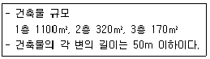
- 2개
- 3개
- 4개
- 5개
(정답률: 59%)
74. 유도등은 전기회로에 점멸기를 사용하지 않고 항시 점등상태를 유지하여야 하는데, 3선식 배선에 따라 상시 충전되는 구조인 경우, 점등되지 않아도 되는 장소로서 옳지 않은 것은?
- 외부광(光)에 따라 피난구를 쉽게 식별할 수 있는 장소
- 공연장, 암실 등으로서 어두워야 할 필요가 있는 장소
- 소방대상물의 관계인 또는 종사원이 주로 사용하는 장소
- 비상조명등이 설치되는 장소
(정답률: 42%)
75. 연기감지기의 일반적인 설치기준에 관한 다음 설명 중 옳은 것은?
- 감지기(1종)는 복도 및 통로에 있어서는 보행거리 20m마다 1개 이상을 설치한다.
- 감지기(1종)는 계단 및 경사로에 있어서는 수직거리 15m마다 1개 이상을 설치한다.
- 감지기는 벽 또는 보로부터 1m 이상 떨어진 곳에 설치한다.
- 천장 또는 반자가 낮은 실내 또는 좁은 실내에 있어서는 출입구에서 먼 부분에 설치한다.
(정답률: 42%)
76. 비상경보설비를 설치하여야 할 특정소방대상물은?
- 연면적 300m2(지하가 중 터널을 제외한다.) 이상인 것
- 지하층 또는 무창층(공연장 제외)의 바닥면적이 100m2 이상인 것
- 지하가 중 터널로서 길이가 500m 이상인 것
- 30인 이상의 근로자가 작업하는 옥내작업장
(정답률: 54%)
77. 누전경보기에서 누설전류를 유기한 변류기의 미소전압을 입력받아 내장된 증폭기로 증폭시켜 주는 기능을 하는 구성요소는 다음 중 어느 것인가?
- 차단릴레이
- 수신기
- 음향장치
- 경보기
(정답률: 69%)
78. 비상조명등이 설치된 바닥에서 조도는 몇 lx 이상 되어야 하는가?
- 0.1
- 0.2
- 0.5
- 1.0
(정답률: 62%)
79. 자동화재속보설비의 설치기준에 관한 사항이다. ( ) 안의 내용으로 알맞은 것은?
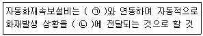
- ㉠ 자동화재탐지설비 ㉡ 소방관서
- ㉠ 자동소화설비 ㉡ 종합방재센터
- ㉠ 비상방송설비 ㉡ 소방관서
- ㉠ 비상경보설비 ㉡ 종합방재센터
(정답률: 88%)
80. 휴대용 비상조명등에 대한 기준으로 적합하지 않은 것은?
- 건전지를 사용하는 경우에는 방전방지 조치를 할 것
- 사용시 수동으로 점등되는 구조일 것
- 외함은 난연성능이 있을 것
- 충전식 배터리의 용량은 20분 이상 유효하게 사용할 수 있는 것으로 할 것
(정답률: 68%)